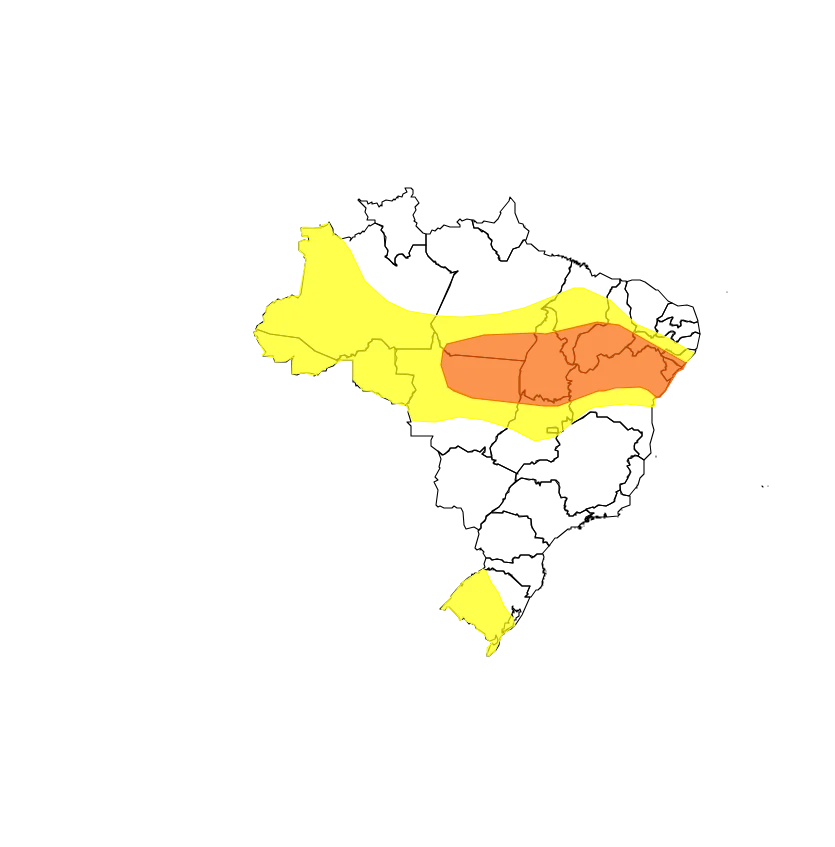

Clima segue instável em quase todo o Brasil; Sudeste tem onda de calor
Alerta para temporais vai do Amazonas à Bahia; no Rio Grande do Sul são esperadas chuvas fortes
A última semana de novembro será marcada por extremos climáticos. No Nordeste, a frente fria estacionada no litoral de desloca lentamente, provocando tempo instável. No Sudeste, as temperaturas sobem, podendo ultrapassar os 30 °C . No Norte e no Sul, o tempo segue chuvoso.
De acordo com o Instituto Nacional de Metereologia (Inmet), os estados do Rio Grande do Sul, mais Norte, Centro-Oeste e Nordeste estão com alertas amarelo (perigo potencial) e (perigo) laranja para temporais.
Tempo instável segue pela semana
O mapa de risco meteorológico destaca áreas em vermelho, como o sul do Maranhão, centro-sul do Piauí, oeste de Pernambuco, além do oeste e norte da Bahia, onde há alerta para temporais com potencial para chuvas intensas e rajadas de vento na terça-feira (26).
Na faixa central da Bahia, a chuva será moderada a forte ao longo do dia. A instabilidade persistirá até quarta-feira (27), mas as chuvas começam a perder força gradualmente.
Nas regiões litorâneas do Maranhão, Piauí, Ceará, Rio Grande do Norte e Paraíba, o tempo firme predominará, com temperaturas elevadas e umidade relativa do ar reduzida, chegando a valores críticos abaixo de 30% em algumas áreas.
Chuva no NE supera média mensal
O Nordeste do Brasil enfrenta uma sequência de dias marcados por condições de tempo instável, com chuvas intensas atingindo vários estados. O cenário de instabilidade continua em algumas áreas na terça-feira (26), embora a previsão indique redução das chuvas ao longo da semana.
Petrolina, em Pernambuco, foi um dos destaques, registrando 134,8 mm em apenas 72 horas, mais que o dobro da média de novembro (46,5 mm). Outro exemplo foi Manari (PE), onde choveu 150,5 mm, ultrapassando em muito a média mensal de apenas 13 mm.
Piauí: São João do Piauí (119,8 mm), Palmeirais (106,0 mm);
Pernambuco: Terra Nova (99,2 mm);
Bahia: Santa Cruz Cabrália (104,2 mm), Vitória da Conquista (106,4 mm), Taperoá (108,4 mm), Barra do Choça (115,0 mm), Presidente Jânio Quadros (131,2 mm).
Na capital baiana, Salvador, o acumulado de 1º a 25 de novembro alcançou 175,6 mm, bem acima da média climatológica para o mês (108,2 mm).
Deixe um comentário: